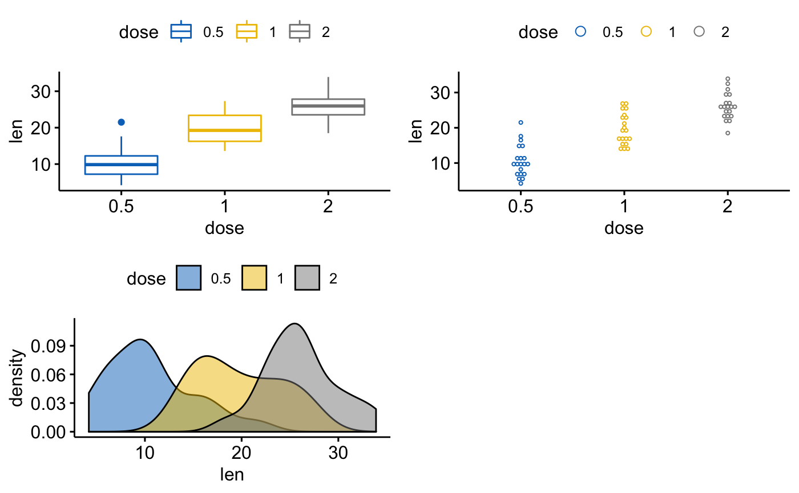
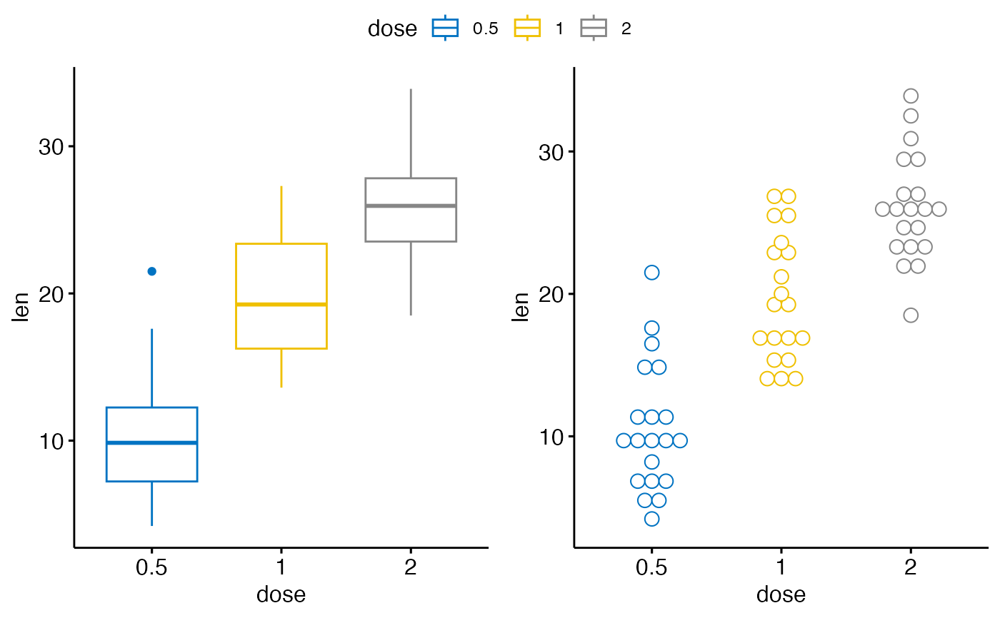

ggarrange.RdArrange multiple ggplots on the same page. Wrapper around
plot_grid(). Can arrange multiple ggplots over
multiple pages, compared to the standard
plot_grid(). Can also create a common unique legend
for multiple plots.
ggarrange(..., plotlist = NULL, ncol = NULL, nrow = NULL, labels = NULL, label.x = 0, label.y = 1, hjust = -0.5, vjust = 1.5, font.label = list(size = 14, color = "black", face = "bold", family = NULL), align = c("none", "h", "v", "hv"), widths = 1, heights = 1, legend = NULL, common.legend = FALSE)
| ... | list of plots to be arranged into the grid. The plots can be either ggplot2 plot objects or arbitrary gtables. |
|---|---|
| plotlist | (optional) list of plots to display. |
| ncol | (optional) number of columns in the plot grid. |
| nrow | (optional) number of rows in the plot grid. |
| labels | (optional) list of labels to be added to the plots. You can also set labels="AUTO" to auto-generate upper-case labels or labels="auto" to auto-generate lower-case labels. |
| label.x | (optional) Single value or vector of x positions for plot labels, relative to each subplot. Defaults to 0 for all labels. (Each label is placed all the way to the left of each plot.) |
| label.y | (optional) Single value or vector of y positions for plot labels, relative to each subplot. Defaults to 1 for all labels. (Each label is placed all the way to the top of each plot.) |
| hjust | Adjusts the horizontal position of each label. More negative values move the label further to the right on the plot canvas. Can be a single value (applied to all labels) or a vector of values (one for each label). Default is -0.5. |
| vjust | Adjusts the vertical position of each label. More positive values move the label further down on the plot canvas. Can be a single value (applied to all labels) or a vector of values (one for each label). Default is 1.5. |
| font.label | a list of arguments for customizing labels. Allowed values are the combination of the following elements: size (e.g.: 14), face (e.g.: "plain", "bold", "italic", "bold.italic"), color (e.g.: "red") and family. For example font.label = list(size = 14, face = "bold", color ="red"). |
| align | (optional) Specifies whether graphs in the grid should be horizontally ("h") or vertically ("v") aligned. Options are "none" (default), "hv" (align in both directions), "h", and "v". |
| widths | (optional) numerical vector of relative columns widths. For example, in a two-column grid, widths = c(2, 1) would make the first column twice as wide as the second column. |
| heights | same as |
| legend | character specifying legend position. Allowed values are one of c("top", "bottom", "left", "right", "none"). To remove the legend use legend = "none". |
| common.legend | logical value. Default is FALSE. If TRUE, a common unique legend will be created for arranged plots. |
return an object of class ggarrange, which is a ggplot or a
list of ggplot.
data("ToothGrowth") df <- ToothGrowth df$dose <- as.factor(df$dose) # Create some plots # :::::::::::::::::::::::::::::::::::::::::::::::::: # Box plot bxp <- ggboxplot(df, x = "dose", y = "len", color = "dose", palette = "jco") # Dot plot dp <- ggdotplot(df, x = "dose", y = "len", color = "dose", palette = "jco") # Density plot dens <- ggdensity(df, x = "len", fill = "dose", palette = "jco") # Arrange # :::::::::::::::::::::::::::::::::::::::::::::::::: ggarrange(bxp, dp, dens, ncol = 2, nrow = 2)#># Use a common legend for multiple plots ggarrange(bxp, dp, common.legend = TRUE)#>